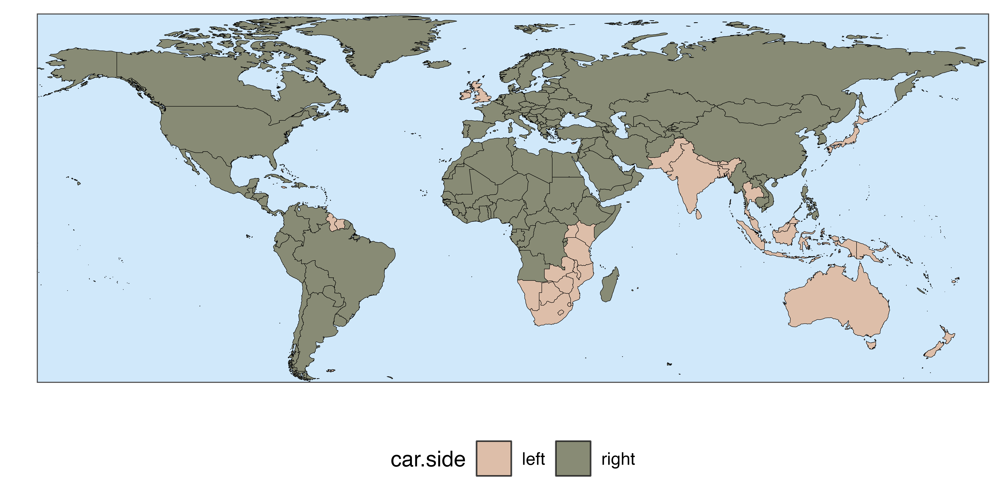
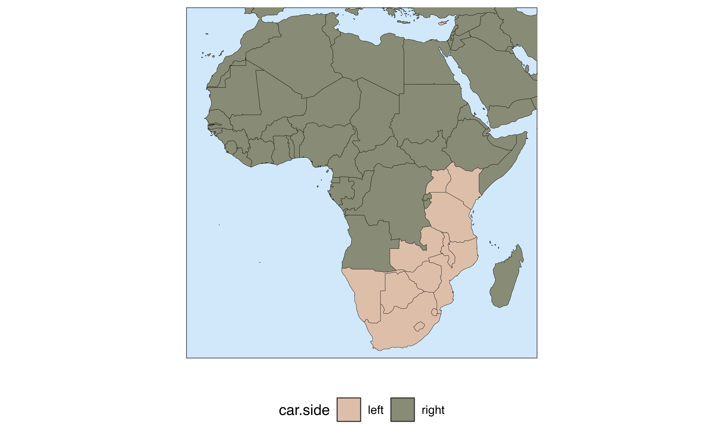
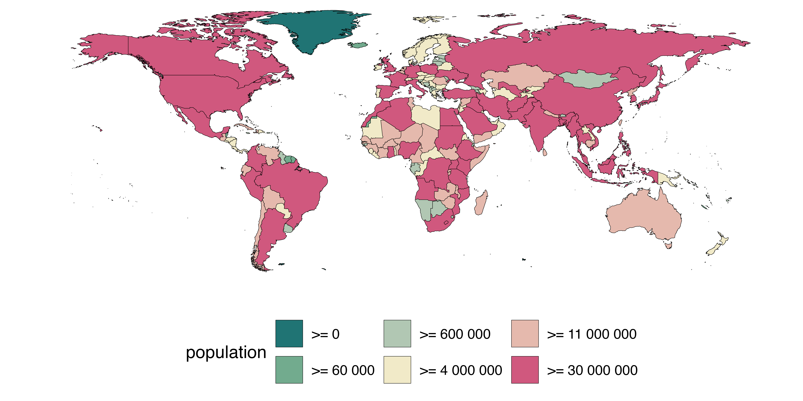
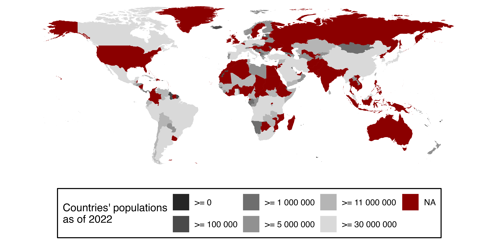
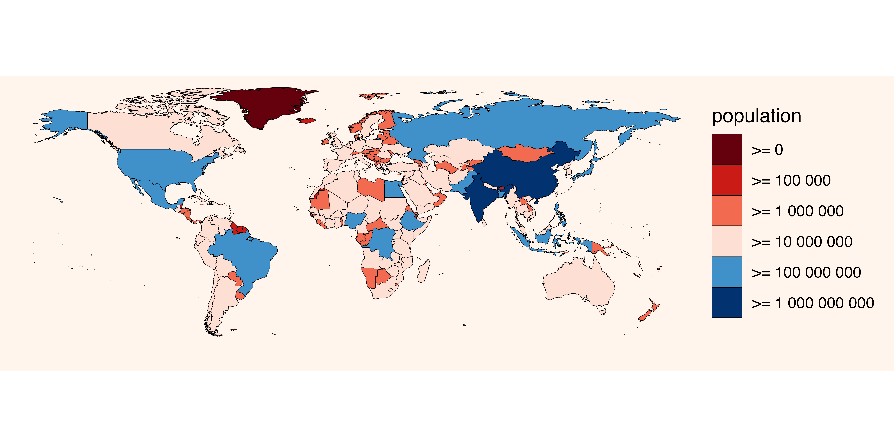

Chloropleth
maps can be a powerful visual tool to communicate information about
countries. However, making a nice map in R can be deceivingly
time-consuming. This is where quick_map() can help!
Its fuzzy matching algorithm automatically recognises country names and cuts the hassle of matching country data to country shapes. Predefined colour themes and zooms are provided, to cut the time involved in making a nice looking map. It even provides an easy integrated option to save the plot locally with predefined settings.
With quick_map() you can produce a publication-grade
plot with one short line of code. If you are still not happy with how
your map looks, customisation is endless with all the usual ggplot
commands.
In this vignette, we will walk through some examples.
Some data to plot
Let’s start by loading the package and putting together a table with country data which we will use for demonstration. This table contains information on countries’ population (numeric continuous variable), a boolean variable indicating whether the country is landlocked, a categorical/factor variable indicating whether cars in the country drive on the left or right, and finally information on the capital of the countries (name, latitude/longitude).
library(countries)
data <- country_info(fields = c("population", "landlocked", "car", "capital", "capitalInfo"))Quick start
All it takes to make a plot is one line of code telling to plot the
column "car.side"from the table data. The
function will take care of everything else. Under the hood, the function
looks for a column of country names and matches them to one of the
territories in the ISO standard
3166-1.
quick_map(data, plot_col = "car.side", verbose = FALSE)
Saving your plot
The plot can be saved with by passing a file path to the argument
save_to. This comes with predefined size and resolution
options. If you wish a more customised download, the function
ggplot2::ggsave() can be used.
quick_map(data, plot_col = "car.side",
save_to = "example_path/plot.png")What happens if a country is not recognised ?
When a country name is not recognised or does not match with a country in the standard, a warning is given to the user. In the example above, the country that has no match (UNK) is Kosovo, which is not in the ISO 3166-1 standard.
If you are interested in knowing exactly how the country were matched
you can just use the function country_name().
Zooming / Regional maps
Suppose you wish to plot a map of specific regions of the globe. The
package comes with predefined zoom settings
c("Default", "World", "Africa", "Asia", "Europe", "SEAsia", "NAmerica", "CAmerica", "SAmerica", "Oceania").
Alternatively, it is also possible to define a custom zoom by passing
the min/max longitude and latitude.
quick_map(data, plot_col = "car.side", zoom = "Africa")

Customising the look of your map
The function provides basic settings to customise the essential elements of the map in a simple way. If these changes are not enough, full customisation can be achieved with ggplot commands. Let’s see some examples.
Themes and visual settings
With the argument theme it is possible to switch among
the predefined looks for the map. theme can take as a value
a number between 1 and 11, or one of the predefined themes’ names:
c("Default", "Greyscale", "Candy", "RedBlue", "Dark", "Reds", "Blues", "Greens", "Viridis", "Cividis", "Distinct").
If 0 or "NoTheme" is passed, ggplot2 settings
are used (no theme is applied to the map).
quick_map(data, plot_col = "population", verbose = FALSE,
theme = "Candy")
Some basic visual elements can be modified within
quick_map(). For instance, In case you are not happy with
the colour ordering, it can be reversed with
reverse_palette = TRUE. col_na can be used to
set the colour for countries with missing data (NAs), finally,
col_na and width_border set the colour and
thickness of the border lines between territories (or remove them
altogether).
quick_map(data[1:150,], plot_col = "population", verbose = FALSE,
theme = "Greyscale",
reverse_palette = TRUE,
col_na = "darkred",
col_border = "NA") # here we are removing the border lines
Colour scale breaks
By default, quick_map() discretises continuous
variables, such as population, in 6 buckets for plotting. This is
because continuous scales usually are not easy to interpret in world
maps. This means that the colour assignment depends the bucket in which
the country falls. In some cases, like in the example above, the
automatic buckets defined by quick_map() may not yield the
best results. Users can supply values for the colour breaks manually
with the argument col_breaks. In the example below, I
manually pass powers of ten as breaks.
quick_map(data, plot_col = "population", verbose = FALSE,
theme = "RedBlue",
col_breaks = c(0, 1e5, 1e6, 1e7 , 1e8, 1e9))
Some predefined themes have only a limited number of colours. If you
have many breaks, the following themes support more colours:
c("Greyscale", "Dark", "Reds", "Blues", "Greens", "Viridis", "Cividis", "Distinct").
Finally, if you wish to keep a continuous colour scale, instead of a
disretised one, you can request the raw ggplot output with
theme = 0.
Advanced customisation
The nice thing about quick_map() is that the output is a
ggplot object, so customisation is truly endless. Let’s start with our
last plot:
p <- quick_map(data, plot_col = "population", verbose = FALSE,
theme = "RedBlue",
col_breaks = c(0, 1e5, 1e6, 1e7 , 1e8, 1e9))The look of the can be customised with any of ggplot’s
theme or scale commands. For example, below I
remove the name of the legend, provide custom colours
for the 6 buckets, add a title and change the background:
library(ggplot2)
# let's define 6 colours for our map
colours6 <- c("white", "lightblue", "blue", "grey", "black","yellow")
# let's apply them to our plot!
p +
scale_fill_manual(name = NULL, # remove name in fill legend
values = colours6)+ # use custom colours
ggtitle("World population") + # add a title to the plot
theme(plot.background = element_rect(fill = "#e3cff9"), # change colour of background
legend.position = "top", # move legend on top
plot.title = element_text(hjust = 0.5, family = "mono")) # center the title and change font familyAnything that works with ggplot will work also with the output of
quick_map(). It’s even possible to add annotations
or additional layers to the map. For example, in the image
below, I am adding text, arrows and markers corresponding to country
capitals by using the longitude and latitude as coordinates.
# extract capital longitude and latitude in data table
data$long <- as.numeric(sub(x = data$capitalInfo.latlng, pattern = "^.*; ", replacement = "", perl = TRUE))
data$lat <- as.numeric(sub(x = data$capitalInfo.latlng, pattern = ";.*$", replacement = "", perl = TRUE))
# make a map
quick_map(data, "landlocked", zoom = "Europe", theme = "Greens")+
geom_point(data = data, mapping = aes(x = long, y = lat, group = NULL), shape = 10) + # add markers for the capitals
geom_text(data = data[1:20,], mapping = aes(x = long, y = lat, label = capital, group = NULL), size = 3, nudge_y = -1) + # printing capital name for first 20 rows
annotate("segment", x = 18, y = 35, xend = 14, yend = 42,
arrow = arrow(type = "closed", length = unit(0.02, "npc")))+ # add an arrow
annotate("label", x = 18, y = 35, label = "A boot!") # add a text annotation